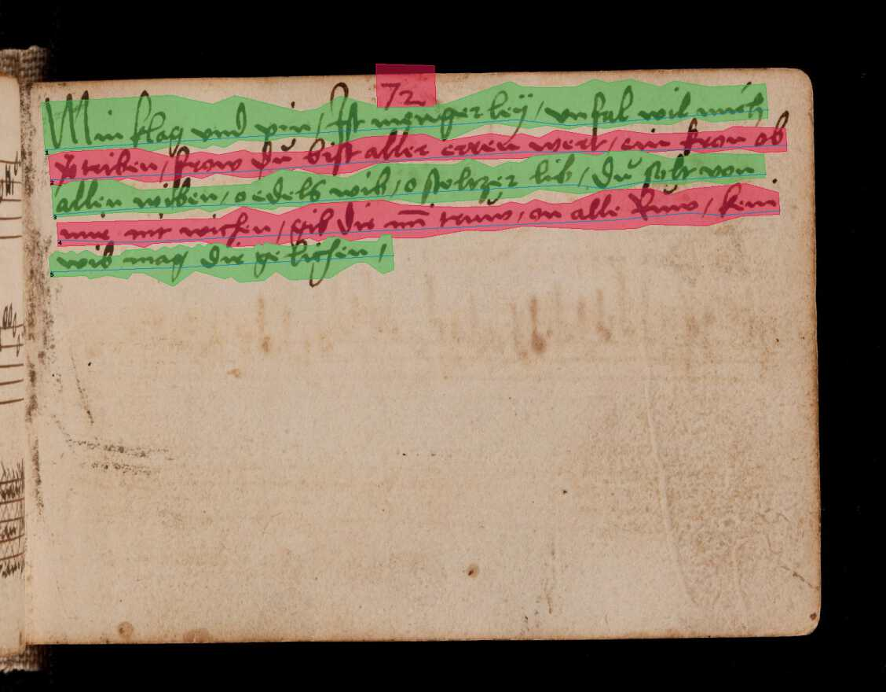

Page Segmentation¶
The segment subcommand accesses page segmentation into lines and regions with the two layout analysis methods implemented: the trainable baseline segmenter that is capable of detecting both lines of different types and regions and a legacy non-trainable segmenter that produces bounding boxes.
Universal parameters of either segmenter are:
option |
action |
|---|---|
-d, --text-direction |
Sets principal text direction. Valid values are horizontal-lr, horizontal-rl, vertical-lr, and vertical-rl. |
-m, --mask |
Segmentation mask suppressing page areas for line detection. A simple black and white mask image where 0-valued (black) areas are ignored for segmentation purposes. |
Baseline Segmentation¶
The baseline segmenter works by applying a segmentation model on a page image which labels each pixel on the image with one or more classes with each class corresponding to a line or region of a specific type. In addition there are two auxiliary classes that are used to determine the line orientation. A simplified example of a composite image of the auxiliary classes and a single line type without regions can be seen below:

In a second step the raw heatmap is vectorized to extract line instances and region boundaries, followed by bounding polygon computation for the baselines, and text line ordering. The final output can be visualized as:
The primary determinant of segmentation quality is the segmentation model employed. There is a default model that works reasonably well on printed and handwritten material on undegraded, even writing surfaces such as paper or parchment. The output of this model consists of a single line type and a generic text region class that denotes coherent blocks of text. This model is employed automatically when the baseline segment is activated with the -bl option:
$ kraken -i input.jpg segmentation.json segment -bl
New models optimized for other kinds of documents can be trained (see here). These can be applied with the -i option of the segment subcommand:
$ kraken -i input.jpg segmentation.json segment -bl -i fancy_model.mlmodel
Legacy Box Segmentation¶
The legacy page segmentation is mostly parameterless, although a couple of switches exist to tweak it for particular inputs. Its output consists of rectangular bounding boxes in reading order and the general text direction (horizontal, i.e. LTR or RTL text in top-to-bottom reading order or vertical-ltr/rtl for vertical lines read from left-to-right or right-to-left).
Apart from the limitations of the bounding box paradigm (rotated and curved lines cannot be effectively extracted) another important drawback of the legacy segmenter is the requirement for binarized input images. It is therefore necessary to apply binarization first or supply only pre-binarized inputs.
The legacy segmenter can be applied on some input image with:
$ kraken -i 14.tif lines.json segment -x
$ cat lines.json
Available specific parameters are:
option |
action |
|---|---|
--scale FLOAT |
Estimate of the average line height on the page |
-m, --maxcolseps |
Maximum number of columns in the input document. Set to 0 for uni-column layouts. |
-b, --black-colseps / -w, --white-colseps |
Switch to black column separators. |
-r, --remove-hlines / -l, --hlines |
Disables prefiltering of small horizontal lines. Improves segmenter output on some Arabic texts. |
-p, --pad |
Adds left and right padding around lines in the output. |
Principal Text Direction¶
The principal text direction selected with the -d/--text-direction is a
switch used in the reading order heuristic to determine the order of text
blocks (regions) and individual lines. It roughly corresponds to the block
flow direction in CSS with
an additional option. Valid options consist of two parts, an initial principal
line orientation (horizontal or vertical) followed by a block order (lr
for left-to-right or rl for right-to-left).
Warning
The principal text direction is independent of the direction of the inline text direction (which is left-to-right for writing systems like Latin and right-to-left for ones like Hebrew or Arabic). Kraken deals automatically with the inline text direction through the BiDi algorithm but can’t infer the principal text direction automatically as it is determined by factors like layout, type of document, primary script in the document, and other factors. The different types of text directionality and their relation can be confusing, the W3C writing mode document explains the fundamentals, although the model used in Kraken differs slightly.
The first part is usually horizontal for scripts like Latin, Arabic, or Hebrew where the lines are horizontally oriented on the page and are written/read from top to bottom:

Other scripts like Chinese can be written with vertical lines that are written/read from left to right or right to left:

The second part is dependent on a number of factors as the order in which text blocks are read is not fixed for every writing system. In mono-script texts it is usually determined by the inline text direction, i.e. Latin script texts columns are read starting with the top-left column followed by the column to its right and so on, continuing with the left-most column below if none remain to the right (inverse for right-to-left scripts like Arabic which start on the top right-most columns, continuing leftward, and returning to the right-most column just below when none remain).
In multi-script documents the order is determined by the primary writing system employed in the document, e.g. for a modern book containing both Latin and Arabic script text it would be set to lr when Latin is primary, e.g. when the binding is on the left side of the book seen from the title cover, and vice-versa (rl if binding is on the right on the title cover). The analogue applies to text written with vertical lines.
With these explications there are four different text directions available:
Text Direction |
Examples |
|---|---|
horizontal-lr |
Latin script texts, Mixed LTR/RTL docs with principal LTR script |
horizontal-rl |
Arabic script texts, Mixed LTR/RTL docs with principal RTL script |
vertical-lr |
Vertical script texts read from left-to-right. |
vertical-rl |
Vertical script texts read from right-to-left. |
Masking¶
It is possible to keep the segmenter from finding text lines and regions on certain areas of the input image. This is done through providing a binary mask image that has the same size as the input image where blocked out regions are white and valid regions black:
$ kraken -i input.jpg segmentation.json segment -bl -m mask.png

{kind=link}